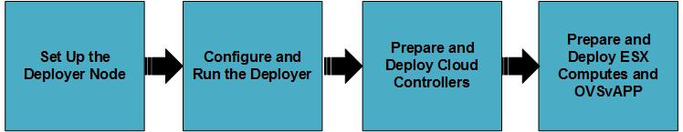

This document describes the procedure for the deployment of an ESX cloud using input model and adding more ESX hosts to an already activated cluster.
We have put together a Pre-Installation Checklist that should help with the recommended pre-installation tasks.
ESX/vCenter integration is not fully automatic, vCenter administrators are advised of the following responsibilities to ensure secure operation:
At a high level, here are the steps to configure and deploy ESX cloud:

The following topics in this section explain how to deploy ESX cloud.
Installing the Lifecycle-manager
The lifecycle-manager will contain the installation scripts and configuration files to deploy your cloud. You can set up the lifecycle-manager on a dedicated node or you do so on your first controller node. The default choice is to use the first controller node as the lifecycle-manager.
Once the initial installation is finished, complete the lifecycle-manager setup with these steps:
At the end of this section you should have a node set up with Linux for HPE Helion on it.
Configure and Run the Lifecycle-manager
sudo mount Helion-OpenStack-2.0.0.iso /media/cdrom
tar xvf /media/cdrom/hos/hos-2.0.0-20151022T082820Z.tar
~/hos-2.0.0/hos-init.bash
You will be prompted to enter an optional SSH passphrase when running hos-init.bash. This passphrase is used to protect the key used by Ansible when connecting to its client nodes. If you do not want to use a passphrase then just press return at the prompt.
For automated installation (e.g. CI) it is possible to disable SSH passphrase prompting by setting the HOS_INIT_AUTO environment variable before running hos-init.bash, like this:
export HOST_INIT_AUTO=y
If you have protected the SSH key with a passphrase then execute the following commands to avoid having to enter the passphrase on every attempt by Ansible to connect to its client nodes:
eval $(ssh-agent) ssh-add ~/.ssh/id_rsa
At the end of this section you should have a local directory structure, as described below:
helion/ Top level directory helion/examples/ Directory contains the config input files of the example clouds helion/my_cloud/definition/ Directory contains the config input files helion/my_cloud/config/ Directory contains .j2 files which are symlinks to the /hos/ansible directory helion/hos/ Directory contains files used by the installer helion/tech-preview Directory contains the config input files of the tech-preview clouds
For any troubleshooting information regarding these steps, see Troubleshooting Your Installation
cp -r ~/helion/examples/entry-scale-esx/* ~/helion/my_cloud/definition/
~/helion/my_cloud/config/logging/vars
- centralized_logging:
enabled: true
format: rawjson
files:
- /var/log/eon/eon-api-json.log
log_rotate:
- daily
- compress
- missingok
- notifempty
- copytruncate
- maxsize 45M
- rotate 5
- create 640 eon eon
- centralized_logging:
enabled: true
format: rawjson
files:
- /var/log/eon/eon-conductor-json.log
log_rotate:
- daily
- compress
- missingok
- notifempty
- copytruncate
- maxsize 45M
- rotate 5
- create 640 eon eon
cd ~/helion/hos/ansible git add -A git commit -m "My config or other commit message"
Then you need to run the following commands to complete your configuration. These commands also verify your configuration is correct.
cd ~/helion/hos/ansible ansible-playbook -i hosts/localhost bm-power-status.yml
cd ~/helion/hos/ansible ansible-playbook -i hosts/localhost config-processor-run.yml
If you receive an error during either of these steps then there is an issue with one or more of your configuration files. We recommend that you verify that all of the information in each of your configuration files is correct for your environment and then commit those changes to git using the instructions above.
To provision the baremetal nodes in your cloud deployment you can either use the automated operating system installation process provided by HPE Helion OpenStack or you can use the 3rd party installation tooling of your choice. We will outline both methods below:
Using 3rd Party Baremetal Installers
If you do not wish to use the automated operating system installation tooling included with HPE Helion OpenStack 2.0 then the requirements that have to be met using the installation tooling of your choice are:
If you chose this method for installing your baremetal hardware, skip forward to the Run the Configuration Processor step.
If you would like to use the automated operating system installation tools provided by HP Helion OpenStack 2.0 then complete all of the steps below.
Using the Automated Operating System Installation Provided by HPE Helion OpenStack
Part One: Deploy Cobbler
This phase of the install process takes the baremetal information that was provided in servers.yml and installs the Cobbler provisioning tool and loads this information into Cobbler. This sets each node to netboot-enabled: true in Cobbler. Each node will be automatically marked as netboot-enabled: false when it completes its operating system install successfully. Even if the node tries to PXE boot subsequently, Cobbler will not serve it. This is deliberate so that you can't reimage a live node by accident.
The cobbler-deploy.yml playbook prompts for a password - this is the password that will be encrypted and stored in Cobbler, which is associated with the user running the command on the deployer, that you will use to log in to the nodes via their consoles after install. The username is the same as the user set up in the initial dialogue when installing the deployer from the iso, and is the same user that is running the cobbler-deploy play.
cd ~/helion/hos/ansible ansible-playbook -i hosts/localhost bm-power-status.yml
cd ~/helion/hos/ansible ansible-playbook -i hosts/localhost cobbler-deploy.yml
Part Two: Image the Nodes
The reimage command is:
cd ~/helion/hos/ansible ansible-playbook -i hosts/localhost bm-reimage.yml [-e nodelist=node1,node2,node3]
If a nodelist is not specified then the set of nodes in cobbler with netboot-enabled: True is selected. The playbook pauses at the start to give you a chance to review the set of nodes that it is targeting and to confirm that it's correct.
You can use the command below which will list all of your nodes with the netboot-enabled: True flag set:
sudo cobbler system find --netboot-enabled=1
For any troubleshooting information regarding these steps, see Troubleshooting Your Installation
cd ~/helion/hos/ansible ansible-playbook -i hosts/localhost ready-deployment.yml
cd ~/scratch/ansible/next/hos/ansible ansible-playbook -i hosts/verb_hosts wipe_disks.yml
cd ~/scratch/ansible/next/hos/ansible ansible-playbook -i hosts/verb_hosts site.yml -e elasticsearch_cluster_name=<name>
ansible-playbook -i hosts/verb_hosts site.yml --ask-vault-pass
For any troubleshooting information regarding these steps, see Troubleshooting Your Installation
The following sections describe the procedure to install and configure ESX compute and OVSvAPPs on vCenter.
The first step in deploying the ESX compute proxy and OVSvAPPs is to create a VM template that will make it easier to deploy the ESX compute proxy for each Cluster and OVSvAPPs on each ESX server.
location /media/cdrom/hos-2.0.0/ hlm-shell-vm.ova
This section describes the procedures to prepare and deploy the ESX computes and OVSvAPPs for deployment.
Manage vCenters and Clusters
The following section describes the detailed procedure on managing the vCenters and clusters.
Register a vCenter Server
# eon vcenter-add --name <vCenter Name> --ip-address <vCenter IP address> --username <vCenter Username> --password <vCenter Password> --port <vCenter Port>
# eon vcenter-add --name vc01 --ip-address 10.1.200.41 --username administrator@vsphere.local --password password --port 443 +------------+--------------------------------------+ | Property | Value | +------------+--------------------------------------+ | created_at | 2015-08-20T12:08:09.000000 | | deleted | False | | deleted_at | None | | id | BC9DED4E-1639-481D-B190-2B54A2BF5674 | | ip_address | 10.1.200.41 | | name | vc01 | | password | <SANITIZED> | | port | 443 | | type | vcenter | | updated_at | 2015-08-20T12:08:09.000000 | | username | administrator@vsphere.local | +------------+--------------------------------------+
# eon vcenter-show <vCenter ID>
# eon vcenter-show BC9DED4E-1639-481D-B190-2B54A2BF5674 +------------+--------------------------------------+ | Property | Value | +------------+--------------------------------------+ | created_at | 2015-08-20T12:08:09.000000 | | datacenters| DC1 | | deleted | False | | deleted_at | None | | id | BC9DED4E-1639-481D-B190-2B54A2BF5674 | | ip_address | 10.1.200.41 | | name | vc01 | | password | <SANITIZED> | | port | 443 | | type | vcenter | | updated_at | 2015-08-20T12:08:09.000000 | | username | administrator@vsphere.local | +------------+--------------------------------------+
This involves getting a sample network information template. Fill the details of the template and use that template to register the cloud network configuration for the vCenter.
# eon get-network-info-template --filename <NETWORK_CONF_FILENAME>
# eon get-network-info-template --filename net_conf.json
{
"network": {
# Deployer Network details
# This network should be reachable from the Deployer node
"deployer_network": {
#Deployer Portgroup Name. If already exists then we will use it. #If not then we will create it.
"deployer_pg_name": "hlm-Deployer-PG",
#VLAN id for Deployer Portgroup
"deployer_vlan": "33",
#Enable DHCP for Deployer network ?
"enable_deployer_dhcp": "no",
#CIDR and gateway for deployer network only when enable_deployer_dhcp is no
"deployer_cidr": "10.20.18.0/23",
"deployer_gateway_ip": "10.20.18.1",
#Deployer Node's PXE IP Address
"deployer_node_ip": "10.20.16.2"
},
#Management Network details
"management_network": {
#Mgmt DVS name. If already exists then we will use it. If not #then we will create it.
"mgmt_dvs_name": "hlm-Mgmt",
#Physical NIC name(s) for Mgmt DVS. Make sure that this Physical #NIC(s) is/are free/not used across all hosts in that cluster.
"mgmt_nic_name": "vmnic3",
#Mgmt Portgroup Name. If already exists then we will use it. #If not then we will create it.
"mgmt_pg_name": "hlm-Mgmt-PG",
#Interface order: Example eth1
"mgmt_interface_order": "eth1",
#Provided physical NIC name(s) will be configured as active #uplink(s) from mgmt_dvs_name. If not provided then the first #entry in mgmt_dvs_name will be configured as active and the #remaining as standby.
"active_nics": "",
#Load Balancing. Please choose the corresponding number
#1 -> Route based on the originating virtual port (Choose an #uplink based on the virtual port where the traffic entered the #virtual switch)
#2 -> Route based on IP hash (Choose an uplink based on a hash #of the source and destination IP addresses of each packet. For #non-IP packets, whatever is at those offsets is used to compute #the hash)
#3 -> Route based on source MAC hash (Choose an uplink based on #a hash of the source Ethernet.)
#4 -> Route based on physical NIC load (Choose an uplink based on #the current loads of physical NICs)
#5 -> Use explicit failover order (Always use the highest order #uplink, from the list of Active adapters, which passes failover #detection criteria)
"load_balancing": "1",
#Network Failover Detection. Please choose the corresponding number
# 1 -> Link Status. Relies solely on the link status that the #network adapter provides. This option detects failures, such as #cable pulls and physical switch power failures, but not #configuration errors, such as a physical switch port being #blocked by spanning tree or that is misconfigured to the wrong #VLAN or cable pulls on the other side of a physical switch.
# 2-> Beacon Probing. Sends out and listens for beacon probes on all #NICs in the team and uses this information, in addition to link #status, to determine link failure. This detects many of the #failures previously mentioned that are not detected by link #status alone.
"network_failover_detection": "1",
#Notify Switches(yes/no).
#If you select Yes, whenever a virtual NIC is connected to the #Switch or whenever that virtual NIC’s traffic would be routed #over a different physical NIC in the team because of a failover #event, a notification is sent out over the network to update the #lookup tables on physical switches. In almost all cases, this #process is desirable for the lowest latency of failover #occurrences and migrations with vMotion.
"notify_switches": "yes"
},
"data_network": {
#Tenant network type. Only vlan is supported for HOS 2.0
"tenant_network_type": "vlan",
#Data/Uplink DVS name. If already exists then we will use it. If #not then we will create it.
"data_dvs_name": "hlm-Data",
#Physical NIC name(s) for Data/Uplink DVS. Make sure that this #Physical NIC(s) is/are free/not used across all hosts in that #cluster.
"data_nic_name": "vmnic2, vmnic1",
#Data Portgroup Name. If already exists then we will use it. If #not then we will create it.
"data_pg_name": "hlm-Data-PG",
#Interface order: Example eth2
"data_interface_order": "eth2",
#Provided physical NIC name(s) will be configured as active #uplink(s) from data_dvs_name. If not provided then the first #entry in data_dvs_name will be configured as active and the #remaining as standby.
"active_nics": "vmnic1",
#Load Balancing. Please choose the corresponding number
#1 -> Route based on the originating virtual port (Choose an #uplink based on the virtual port where the traffic entered the #virtual switch)
#2 -> Route based on IP hash (Choose an uplink based on a hash #of the source and destination IP addresses of each packet. For #non-IP packets, whatever is at those offsets is used to compute #the hash)
#3 -> Route based on source MAC hash (Choose an uplink based on #a hash of the source Ethernet.)
#4 -> Route based on physical NIC load (Choose an uplink based on #the current loads of physical NICs)
#5 -> Use explicit failover order (Always use the highest order #uplink, from the list of Active adapters, which passes failover #detection criteria)
"load_balancing": "1",
#Network Failover Detection. Please choose the corresponding number
# 1 -> Link Status. Relies solely on the link status that the #network adapter provides. This option detects failures, such as #cable pulls and physical switch power failures, but not #configuration errors, such as a physical switch port being #blocked by spanning tree or that is misconfigured to the wrong #VLAN or cable pulls on the other side of a physical switch.
# 2-> Beacon Probing. Sends out and listens for beacon probes on all #NICs in the team and uses this information, in addition to link #status, to determine link failure. This detects many of the #failures previously mentioned that are not detected by link #status alone.
"network_failover_detection": "1",
#Notify Switches(yes/no).
#If you select Yes, whenever a virtual NIC is connected to the #Switch or whenever that virtual NIC’s traffic would be routed #over a different physical NIC in the team because of a failover #event, a notification is sent out over the network to update the #lookup tables on physical switches. In almost all cases, this #process is desirable for the lowest latency of failover #occurrences and migrations with vMotion.
“notify_switches”: “yes”
},
“hpvcn_trunk_network”: {
#Trunk DVS name. If already exists then we will use it. If not #then we will create it.
"trunk_dvs_name": "hlm-Trunk",
#Trunk portgroup name. If already exists then we will use it. If #not then we will create it.
"trunk_pg_name": "hlm-Trunk-PG",
#Interface order: Example eth3
"trunk_interface_order": "eth3"
},
#VLAN Range for Data & Trunk port group. Please provide the range #separated by a hyphen (vlan-vlan). Multiple vlan or vlan ranges should #be provided as comma separated value.
"vlan_range": "1-4094"
},
"template": {
#Provide the template name that will be used for cloning Computeproxy #and OVSvApp VMs
"template_name": "hlm-template"
},
"vmconfig": {
#Number of CPUs for OVSvApp/Computeproxy VM
"cpu": "4",
#Amount of RAM for OVSvApp/Computeproxy VM(in Mega Byte)
"memory_in_mb": "4096",
#SSH public key content for OVSvAPP/Computeproxy password less login. #Carefully copy the public key and paste it within the double quotes.
"ssh_key": "<deployer-ssh-pub-key-contents>"
}
}
vi <NETWORK_CONF_FILENAME>
vi net_conf.json
# eon set-network-info --vcenter-id <vCenter ID> --datacenter-name <datacenter name> --config-json <NETWORK_CONF_FILENAME>
# eon set-network-info --vcenter-id BC9DED4E-1639-481D-B190-2B54A2BF5674 --datacenter DC1 --config-json net_conf.json
# eon cluster-list --vcenter-id <vCenter ID>Sample Output
# eon cluster-list --vcenter-id BC9DED4E-1639-481D-B190-2B54A2BF5674 +------------+----------+------------+---------------+ | MOID | Name | Datacenter | Import Status | +------------+----------+------------+---------------+ | domain-c21 | Cluster1 | DC1 | not_imported | +------------+----------+------------+---------------+
You can use one or more ESX clusters for ESX Cloud Deployment. When an Import Cluster is invoked, required ESX Compute Proxy and OVSvApp nodes are deployed.
vCenter can have multiple clusters, but the current release of HPE Helion OpenStack supports only sequential import of clusters (one-by-one). Therefore, you can import only one cluster at a time using the eon cluster-import command.
# eon cluster-import --vcenter-id <vCenter ID> --cluster-name <Cluster Name> --cluster-moid <Cluster Moid>where:
# eon cluster-import --vcenter-id BC9DED4E-1639-481D-B190-2B54A2BF5674 --cluster-name Cluster1 --cluster-moid domain-c21 +--------------+-----------+ | Property | Value | +--------------+-----------+ | cpu_free | 83071.73 | | cpu_total | 83072 | | cpu_used | 0.27 | | datacenter | DC1 | | disk_free | 1022.79 | | disk_total | 1023.75 | | errors | [] | | memory_free | 496.82 | | memory_total | 511.76 | | memory_used | 14.94 | | name | Cluster1 | | state | importing | | switches | [] | +--------------+-----------+
One vCenter can have multiple clusters. But it allows you to import only one cluster at a time.
# eon cluster-list --vcenter-id <vCenter ID>Sample Output
# eon cluster-list --vcenter-id BC9DED4E-1639-481D-B190-2B54A2BF5674 +------------+----------+------------+---------------+ | MOID | Name | Datacenter | Import Status | +------------+----------+------------+---------------+ | domain-c22 | Cluster2 | DC1 | imported | +------------+----------+------------+---------------+
When you execute the active cluster command, the server.yml of the input model is updated with IP Addresses of compute proxy and OVSvApp.
# eon cluster-activate --vcenter-id <vCenter ID> --cluster-moid <Cluster Moid>
Sample Output
# eon cluster-activate --vcenter-id BC9DED4E-1639-481D-B190-2B54A2BF5674 --cluster-moid domain-c22
+---------------+---------------------------------------------------------------------------------------------------------------------------------------------------------------------------------------------------------------------------------------------------------------------------------------------------------------------------------------------------------------------------------------------------------------------------------------------------------------------------------------------------------------------------------------------------------------------------------------------------------------------+
| Property | Value |
+---------------+---------------------------------------------------------------------------------------------------------------------------------------------------------------------------------------------------------------------------------------------------------------------------------------------------------------------------------------------------------------------------------------------------------------------------------------------------------------------------------------------------------------------------------------------------------------------------------------------------------------------+
| node_info | {u'computeproxy': {u'pxe-mac-addr': u'00:50:56:b6:ce:1b', u'pxe-ip-addr': u'172.170.2.4', u'name': u'COMPUTEPROXY_Cluster1', u'cluster-moid': u'domain-c21'}, u'network_driver': {u'cluster_dvs_mapping': u'DC1/host/Cluster1:hlm-Trunk', u'Cluster1': [{u'host-moid': u'host-29', u'pxe-ip-addr': u'172.170.2.3', u'esx_hostname': u'10.1.200.33', u'ovsvapp_node': u'ovsvapp-10-1-200-33', u'pxe-mac-addr': u'00:50:56:b6:5e:9a'}, {u'host-moid': u'host-25', u'pxe-ip-addr': u'172.170.2.2', u'esx_hostname': u'10.1.200.66', u'ovsvapp_node': u'ovsvapp-10-1-200-66', u'pxe-mac-addr': u'00:50:56:b6:56:e6'}]}} |
| resource_moid | domain-c21 |
| resource_name | Cluster1 |
| state | activated |
+---------------+---------------------------------------------------------------------------------------------------------------------------------------------------------------------------------------------------------------------------------------------------------------------------------------------------------------------------------------------------------------------------------------------------------------------------------------------------------------------------------------------------------------------------------------------------------------------------------------------------------------------+
Once the cluster is activated you must configure the volume.
Perform the following steps to modify the volume configuration files:
cd /home/stack/helion/hos/ansible/roles/_CND-CMN/templates
cd /home/stack/helion/my_cloud/config/cinder
It is recommended to modify the cinder.conf.j2 present in /home/stack/helion/my_cloud/config/cinder
# Configure the enabled backends enabled_backends=<unique-section-name> # Start of section for VMDK block storage # # If you have configured VMDK Block storage for cinder you must # uncomment this section, and replace all strings in angle brackets # with the correct values for vCenter you have configured. You # must also add the section name to the list of values in the # 'enabled_backends' variable above. You must provide unique section # each time you configure a new backend. #[<unique-section-name>] #vmware_api_retry_count = 10 #vmware_tmp_dir = /tmp #vmware_image_transfer_timeout_secs = 7200 #vmware_task_poll_interval = 0.5 #vmware_max_objects_retrieval = 100 #vmware_volume_folder = cinder-volumes #volume_driver = cinder.volume.drivers.vmware.vmdk.VMwareVcVmdkDriver #vmware_host_ip = <ip_address_of_vcenter> #vmware_host_username = <vcenter_username> #vmware_host_password = <password> # #volume_backend_name = <vmdk-backend-name> # # End of section for VMDK block storage
cd /home/stack/helion/hos/ansible; git add -A; git commit -m 'Adding ESX Configurations or other commit message';
ansible-playbook -i hosts/localhost config-processor-run.yml; ansible-playbook -i hosts/localhost ready-deployment.yml; cd /home/stack/scratch/ansible/next/hos/ansible;
ansible-playbook -i hosts/verb_hosts guard-deployment.yml ansible-playbook -i hosts/verb_hosts osconfig-run.yml --limit '*esx-ovsvapp:*esx-compute' ansible-playbook -i hosts/verb_hosts hlm-deploy.yml --limit NOV-ESX:NEU-OVSVAPP ansible-playbook -i hosts/verb_hosts cinder-reconfigure.yml